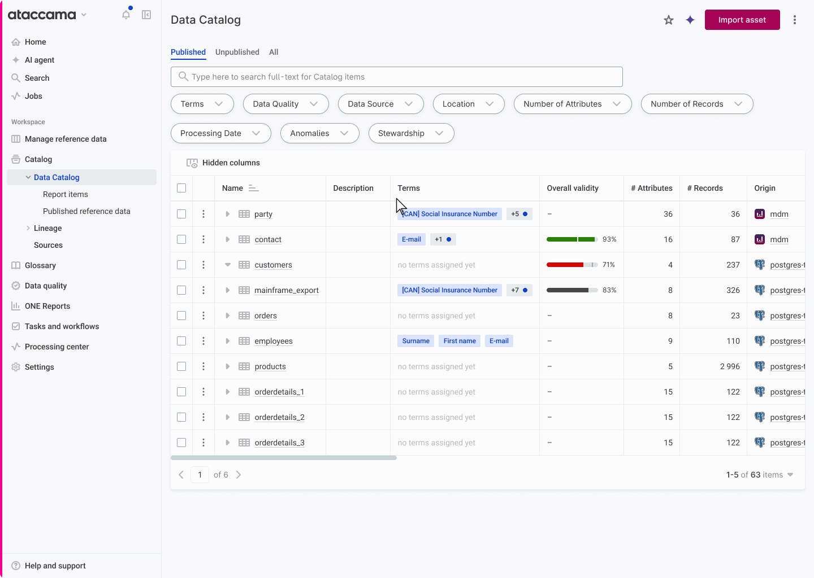
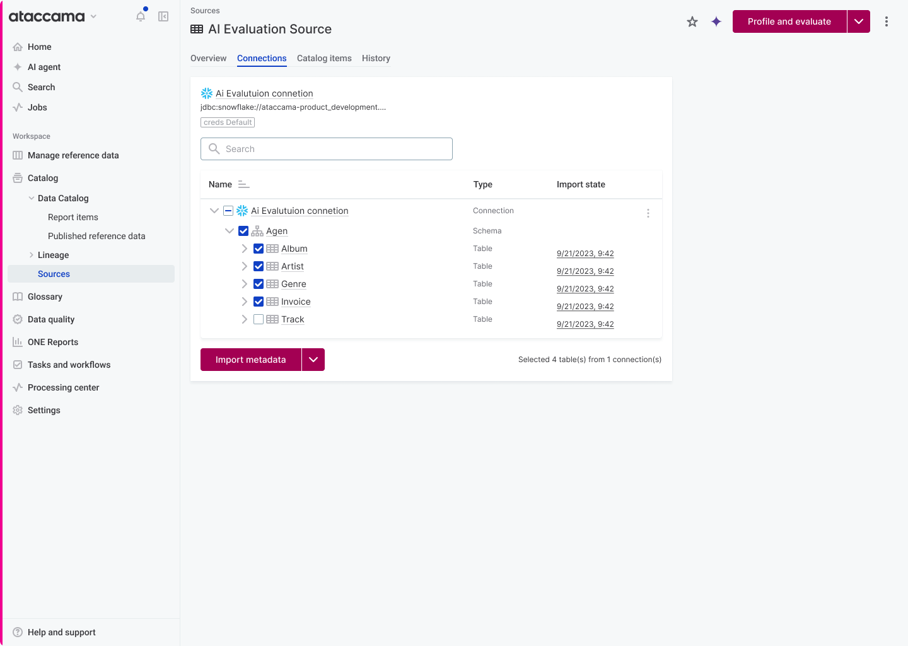
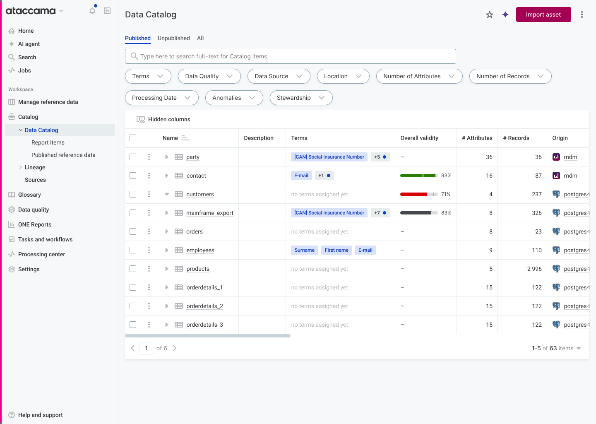

Six clicks, sometimes ten, and no sense of where you were.
Before anyone can govern data in Ataccama ONE, they have to import its metadata. It is the first real action a customer takes after buying the platform, and it keeps happening for the life of the deployment. So a rough import flow is a rough first impression of the whole product.
The old flow made you go into a specific source, then its Connections tab, then deeper into the connection's structure, one connection at a time. There was no breadcrumb inside that structure, so the further you drilled, the less you could tell where you were. And the Data Catalog listing, the page where people actually browse their data, had no way to start an import at all.

Before: import lived one connection at a time, reached by drilling into a single source's Connections tab.
Designed in Figma, then rebuilt in code to test it.
I designed the whole flow in Figma, by hand. At the time there was no Claude Code connection into Figma, so the prototype, the documentation, and the interaction model were all mine. I consulted a developer and other designers as I went, then ran usability testing with consultants, including interviews, to pressure-test the flow against how data people actually import.
Once the design held up in testing, I rebuilt it as a working prototype in code with Claude Code. I directed the implementation and made the design calls. The agent generated the React. The point was to test the real thing with consultants instead of a Figma click-through, so the feedback came from a flow people could actually click.

The one-view import modal as designed in Figma, before it was rebuilt in code.
A prototype in real code beats a Figma mockup.
For work like this, a code prototype wins for three reasons. I can see the design in its actual context, with real structure around it, instead of guessing how it sits in the product. I can present it to a PM or an engineer and have them react to the real thing rather than a click-through. And I can test it properly, including handing it to engineers to try. That is why I did not stop at Figma. I designed there, then rebuilt it in code so the decisions were tested where they would actually live.
Full context in one view, without drilling blind.
The hard part was not adding a button. It was orientation: letting people see and select across their data without losing track of where they were. Three moves did that.

The discoverability change: an "Import asset" button on the Data Catalog listing, where there was no import action before.
An earlier version had a preview step. Testing killed it.
The first version was a three-step wizard: select asset, preview the import, then import the metadata. Testing with consultants killed the middle step. People did not need to preview their selection before importing. The preview added a screen without adding confidence, so I cut it and imported the selected tables directly. The flow went from select, preview, import down to select and import.
From 6 clicks, sometimes 10, down to 3.
Before
6 clicks to import from an existing source and connection. Up to ~10 if the source and connection had to be created first.
After
3 clicks, measured in the working prototype.
I counted the before-flow on the live application and measured the after-flow in the prototype, so both numbers are observed, not estimated. A note on measurement: the product tracks events, but it is hard to detect when a user intends to start an import, so true completion rate is hard to measure cleanly. I treated the click count as the honest, defensible evidence rather than chasing a noisy funnel.